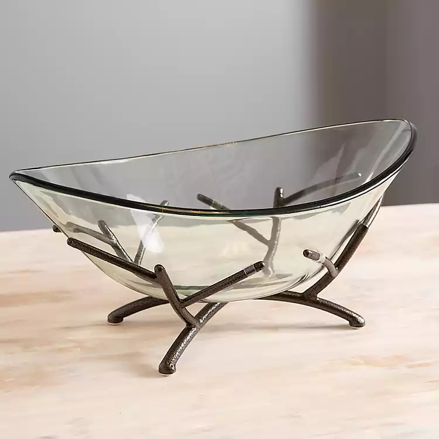
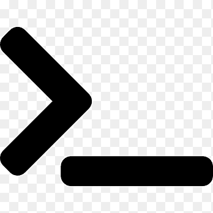
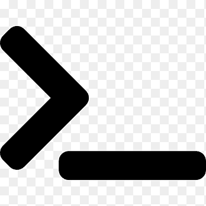

About me
Hello! Welcome! My name is Afonso, a Portuguese web developer currently living in London.
I started this journey because I love creating, inovation and where my imagination can take me trough coding. One of my current objectives for this year 2023 is to get a job as a developer.
In my free time I love to run, read and watch football, and off course spend time with famaily when I can.
Projects
Random ingredients bowl

A JavaScript program that helps to choose 3 random ingredients from 2 types of diets (e.g. Vegetarian and Meat).
Skills
 
